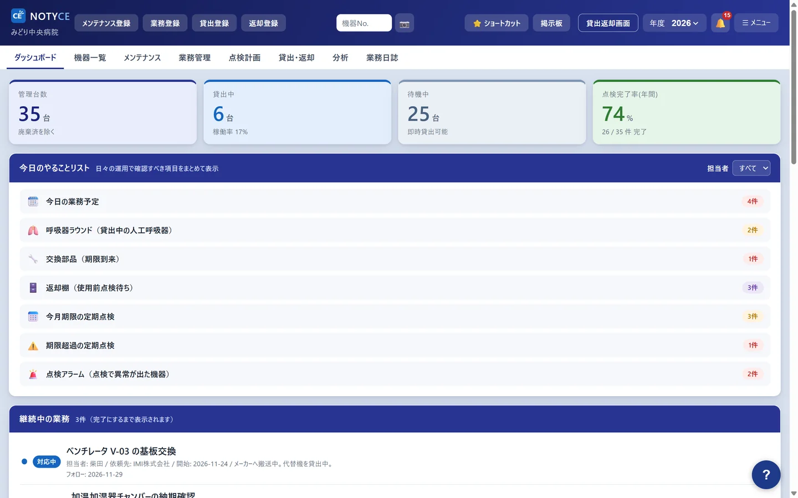
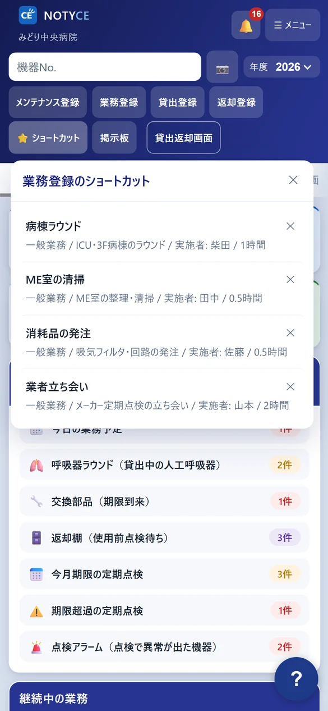

医療機器の管理
- 点検の期限や対象の機器を、紙やExcelで追いかけている
- どの機器がどの部署に貸し出されているか、すぐにわからない
- 気づいたことが担当者の頭の中に残り、チームに共有されない
NOTYCEで、台帳・点検・修理・貸出を一つに。
NOTYCEを見る✓臨床工学技士の現場経験から生まれたサービス
DimiXは、病院・クリニックの医療機器を台帳・点検・修理・貸出までまとめて管理できる「NOTYCE」と、研修や勉強会の録画を繰り返し使える教育動画に仕上げる「メディクリ」を提供しています。


※ NOTYCEの画面はデモ用の架空データです
医療機器の管理も、職員の教育も、通常の業務と並行して進める必要があります。DimiXは、この2つの領域を支えるサービスを提供しています。
どちらも、臨床工学技士として医療現場で働いてきた経験をもとにつくっています。


※ 画面はデモ用の架空データです。施設名・数値は実在しません。
 医療特化型動画編集サービス
医療特化型動画編集サービス
料金プランは3種類¥6,000（税込）から／完成動画15分・ライトプラン
※ 動画のイメージです。
DimiXのサービスは、医療現場で感じた手間や不安を、ITの力で減らすことから考えています。
臨床工学技士として医療現場で働いてきた経験をもとに、機能やサービスの内容を決めています。医療用語や現場の業務の流れを前提に話ができます。
NOTYCEは、スマホとPCからその場で記録できるクラウドサービスです。メディクリは、AIで編集作業を効率化し、仕上げは人の目で確認します。
NOTYCEは、初期設定・データ移行・月次のフォローまで伴走します。メディクリは、ヒアリングから修正まで、オンラインでやり取りできます。
NOTYCEで扱うのは、医療機器と業務の情報です。
施設ごとのデータ分離、3段階の権限、2段階認証、毎日の自動バックアップ。ISO/IEC 27001 の管理策に沿って設計・運用しています。
※ 第三者認証を取得しているものではありません。
患者様が映る映像や個人情報を含む素材は、受け渡し方法や加工の範囲をご依頼時に確認します。
まずはメールでご連絡ください。内容をお聞きしたうえで、進め方をご案内します。
サービスを選ぶと、件名と記入欄が入った状態でメールを作成できます。
NOTYCEは機器の台数や今の管理方法、メディクリは動画の用途や長さをお聞きします。
内容に合わせて、進め方・料金・スケジュールをご案内します。
NOTYCEは初期設定を代行して運用を始めます。メディクリは素材をお預かりして編集を始めます。
DimiXは、臨床工学技士として医療現場で働いてきた経験をもとに、医療機関の業務を支えるサービスをつくっています。現場で感じた手間や不安を、ITの力で少しずつ減らしていくことを目指しています。
導入や依頼を決める前の段階でも、ご相談いただけます。お問い合わせはメールで承ります。
メールアドレス：shibata.k@dxdimix.com